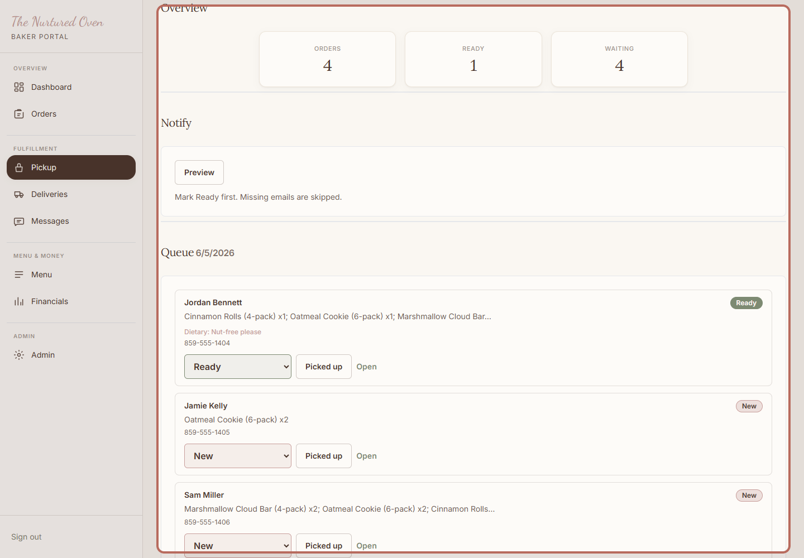
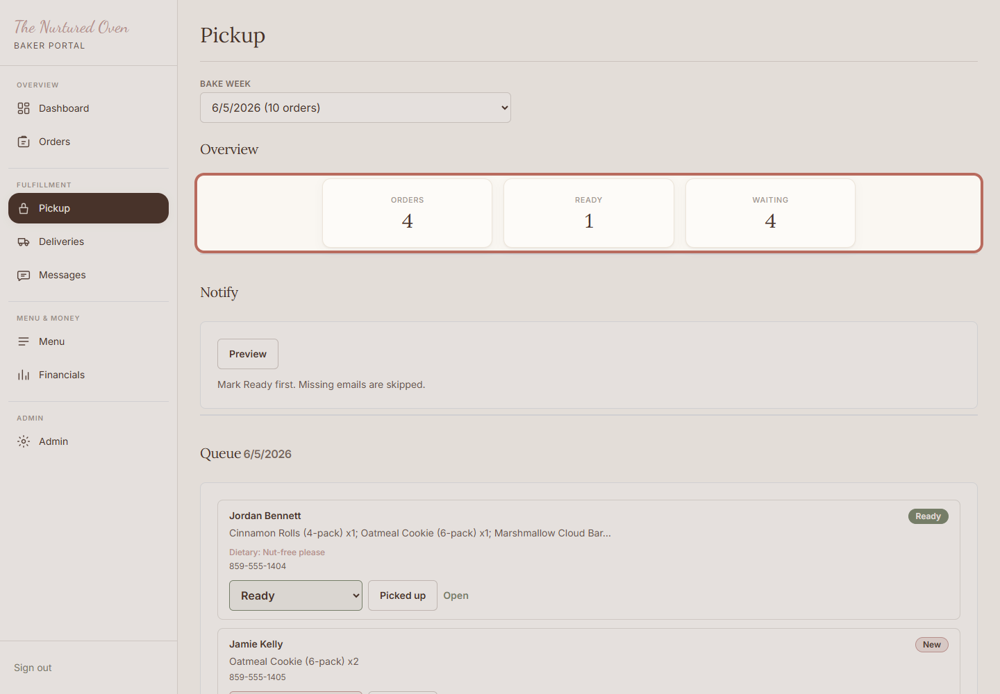
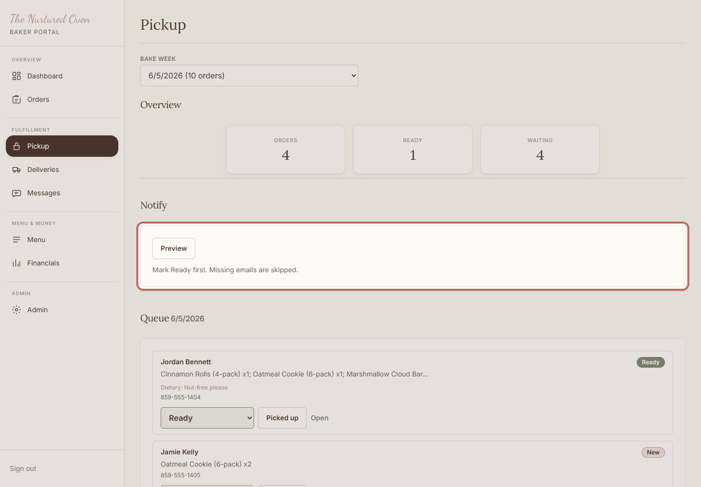
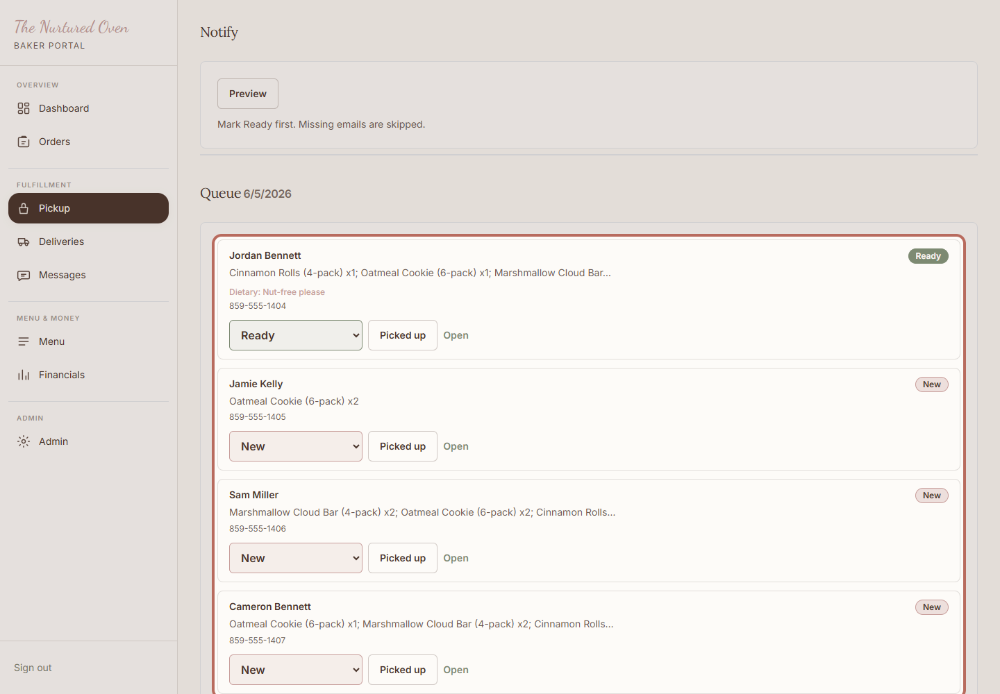
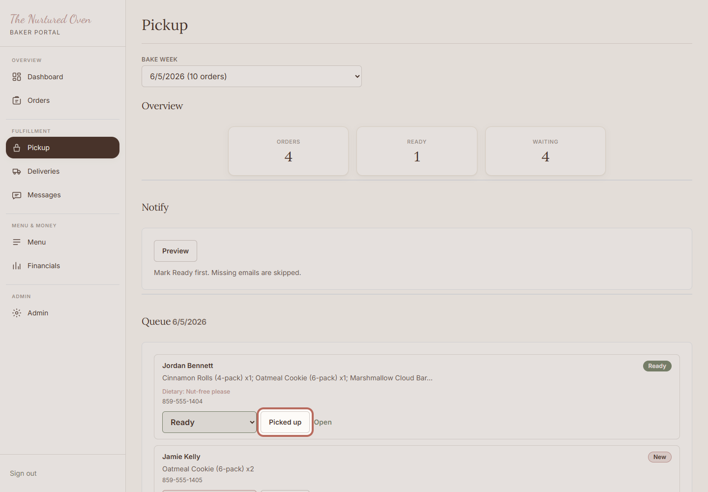

How to manage pickup orders
Use this on pickup day to keep pickup orders organized and mark them complete after customers collect them.
Steps
1. Open Pickup

Open Pickup in the admin area. This is the working list for customer pickups.
Expected result: You can see the pickup overview and queue.
2. Review the overview

Check the overview so you know how many pickup orders are waiting or ready.
Expected result: You know how many pickup orders need attention.
3. Send pickup notes if used

Use Notify when pickup orders are marked Ready and customers should know they can come by.
Expected result: Customers with ready pickup orders can be notified.
4. Work through the queue

Use the queue to check each customer's items, notes, and status.
Expected result: Each pickup order is easy to check before handing it off.
5. Mark picked up

Click Picked up after the customer has their order.
Expected result: The order moves out of the active pickup queue.
Success Check
- Ready pickup orders are clear.
- Picked up orders are marked after customers collect them.
- Any confusing order is left unchanged until you can check it.